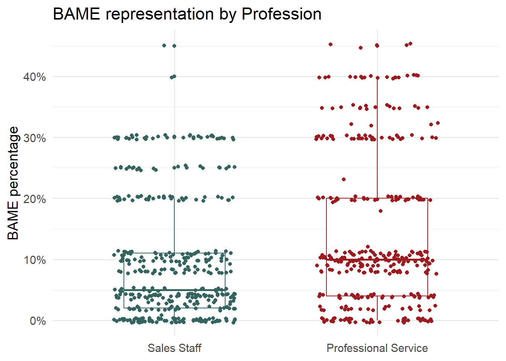

library(tidyverse)
library(kableExtra)
library(car)
library(paletteer)Introduction
In the previous post, I introduced two fundamental concepts to analyze categorical data: frequency tables and the chi-squared test.
This post goes one step further by offering two tools for data analysis, which will work with continuous and categorical data: summary statistics and the independent samples t-test.
As part of descriptive statistics, summary statistics can provide valuable insights into data sets. It may include essential metrics such as the total number of values, the mean value, and the standard deviation. These statistics provide a clear picture of data trends and distribution, aiding in the interpretation of data patterns. On the other hand, the independent-samples t-test (part of inferential statistics) is employed to compare means between two distinct groups. It helps us investigate whether these two groups differ significantly in a particular dimension. When used together, these tools can reveal intriguing patterns and relationships within data.
The rest of the post will guide you through the utilization of summary statistics and the independent-samples t-test for insightful data analysis.
Introducing two distinct tools for data analysis with numerical and categorical data using R
- Summary statistics
- Independent samples t-test
Case study
- Focused on diversity and inclusion (D&I)
- Sourced from the book Predictive HR Analytics : Mastering the HR Metric
- With data available here
Data preparation and exploration
- Packages:
tidyverse,kableExtra,car,paleteer - Data preparation
- Summary statistics
- Data visualization
- Independent samples t-test
Problem Statement
The Goal
A hypothetical company aims to employ scientific methods and procedures to tackle a significant people problem: employee diversity. It recognizes that:
Commercial Perspective
- A more diverse workforce can provide a competitive advantage by enhancing the organization’s understanding of its customers, consequently improving overall performance.
People Perspective
- The organization gains access to a broader candidate pool, increases employee engagement, and elevates retention rates.
The research question
How does the distribution of Black, Asian, or Minority Ethnic (BAME) employees vary across different professions?
Data Preparation and Exploration
Load packages
Look at the data - The structure
Code
diversity <- read_csv("diversity2.csv")
glimpse(diversity)Rows: 928
Columns: 30
$ DepartmentGroupNumber <dbl> 18, 19, 29, 30, 35, 37, 44, 45, 47, 50, 51, 63, …
$ GroupSize <dbl> 18, 28, 11, 17, 32, 60, 23, 36, 32, 70, 52, 15, …
$ PercentMale <dbl> 65, 67, 33, 32, 18, 65, 15, 26, 65, 5, 75, 50, 5…
$ BAME <dbl> NA, NA, NA, NA, NA, NA, NA, NA, NA, NA, NA, NA, …
$ NumberTeamLeads <dbl> 3, 4, 2, 2, 5, 9, 3, 5, 5, 10, 7, 2, 4, 3, 9, 7,…
$ NumberFeMaleTeamLeads <dbl> 1, 0, 0, 0, 3, 0, 1, 0, 0, 2, 0, 0, 1, 0, 1, 0, …
$ Location <dbl> 1, 1, 1, 1, 1, 1, 1, 1, 3, 3, 3, 3, 3, 3, 2, 2, …
$ LondonorNot <dbl> 1, 1, 1, 1, 1, 1, 1, 1, 2, 2, 2, 2, 2, 2, 1, 1, …
$ Function <dbl> 2, 2, 2, 2, 2, 2, 2, 2, 2, 2, 2, 2, 2, 2, 2, 2, …
$ EMPsurvEngage_1 <dbl> 100, 96, 100, 100, 81, 97, 91, 100, 91, 97, 92, …
$ EMPsurvEngage_2 <dbl> 100, 86, 91, 100, 69, 97, 100, 94, 88, 97, 94, 1…
$ EMPsurvEngage_3 <dbl> 94, 86, 100, 100, 72, 87, 100, 89, 91, 93, 98, 9…
$ EMPsurvEngage_4 <dbl> 78, 54, 82, 94, 44, 92, 87, 97, 81, 90, 98, 87, …
$ EMPsurvEngage_5 <dbl> 100, 96, 100, 100, 81, 97, 100, 97, 97, 99, 94, …
$ EMPsurvEngage_6 <dbl> 94, 57, 82, 88, 44, 78, 87, 94, 72, 90, 88, 87, …
$ EMPsurvEngage_7 <dbl> 89, 89, 100, 100, 84, 92, 96, 97, 94, 99, 98, 10…
$ EMPsurvEngage_8 <dbl> 72, 82, 73, 88, 38, 55, 91, 69, 69, 80, 69, 80, …
$ EMPsurvEngage_9 <dbl> 78, 82, 91, 94, 47, 83, 96, 78, 81, 93, 85, 93, …
$ EMPsurvEngagement <dbl> 89, 81, 91, 96, 62, 86, 94, 91, 85, 93, 91, 92, …
$ EMPorgIntegrity1 <dbl> 72, 75, 73, 100, 59, 87, 100, 61, 69, 69, 67, 60…
$ EMPorgIntegrity2 <dbl> 78, 86, 91, 100, 81, 92, 100, 89, 91, 94, 92, 10…
$ EMPorgIntegrity3 <dbl> 89, 89, 91, 100, 88, 93, 100, 89, 97, 97, 94, 10…
$ EMPorgIntegrity4 <dbl> 89, 89, 91, 100, 78, 80, 100, 81, 78, 80, 80, 93…
$ EMPorgIntegrity5 <dbl> 18, 19, 29, 30, 35, 37, 44, 45, 47, 50, 51, 63, …
$ EmpSurvOrgIntegrity <dbl> 69.2, 71.6, 75.0, 86.0, 68.2, 77.8, 88.8, 73.0, …
$ EMPsurvSUP1 <dbl> 72, 79, 73, 100, 81, 88, 100, 75, 78, 96, 98, 87…
$ EMPsurvSUP2 <dbl> 89, 79, 91, 100, 78, 92, 100, 83, 94, 96, 94, 93…
$ EMPsurvSUP3 <dbl> 89, 64, 73, 100, 72, 78, 96, 78, 72, 90, 94, 100…
$ EMPsurvSUP4 <dbl> 83, 82, 73, 100, 75, 87, 100, 78, 84, 91, 98, 80…
$ EmpSurvSupervisor <dbl> 83.25, 76.00, 77.50, 100.00, 76.50, 86.25, 99.00…- The organization comprises 29,976 employees in two functional areas across the UK, and these employees are organized into 928 teams.
- The data set contains 30 variables.
Variables of interest
BAME: Percentage of the team comprised of Black, Asian, or Minority Ethnic employees.
Function: Function 1 = Sales staff (customer-facing roles) or 2 = Professional Service (non-customer-facing roles).
The data set contains both variables of interest as numbers.
The “BAME” variable is numerical, while the “Function” variable is categorical and needs to be transformed into a factor for analysis.
Data preparation
- Create a new variable named “profession” with two levels “Sales Staff” and “Professional Service”
Code
# Create a new variable named "profession" with two levels "Sales Staff" and "Professional Service"
diversity <- diversity|>
mutate(profession = factor(Function,
levels = c(1:2),
labels = c("Sales Staff", "Professional Service")))
# Check levels of the new variable
diversity|>
distinct(diversity$profession)# A tibble: 3 × 1
`diversity$profession`
<fct>
1 Professional Service
2 Sales Staff
3 <NA> Code
# Drop "NA" levels as they are not meaningful for the analysis
diversity_filtered <- diversity|>
filter(profession != "NA")|>
droplevels()
# Check variable levels after dropping "NA"
diversity_filtered|>
distinct(profession)# A tibble: 2 × 1
profession
<fct>
1 Professional Service
2 Sales Staff - Create a new data frame “bame_profession” including variables of interest
Code
# Creating a new data frame "bame_profession" including variables of interest
bame_profession <- diversity_filtered|>
select(BAME, profession)
glimpse(bame_profession)Rows: 927
Columns: 2
$ BAME <dbl> NA, NA, NA, NA, NA, NA, NA, NA, NA, NA, NA, NA, NA, NA, NA,…
$ profession <fct> Professional Service, Professional Service, Professional Se…Summary statistics
Measures of center
Code
bame_profession|>
group_by(profession)|>
summarise(mean=mean(BAME, na.rm = TRUE),
median=median(BAME, na.rm = TRUE),
iqr=IQR(BAME, na.rm =TRUE),
sd=sd(BAME, na.rm = TRUE),
n= sum(!is.na(BAME)))|>
kable(col.names = c("Profession", "Mean", "Median", "IQR", "Std. Deviation", "Sum"), align = "cccc")| Profession | Mean | Median | IQR | Std. Deviation | Sum |
|---|---|---|---|---|---|
| Sales Staff | 0.0968317 | 0.05 | 0.09 | 0.0976745 | 404 |
| Professional Service | 0.1438596 | 0.10 | 0.16 | 0.1247931 | 342 |
- 404 teams within the “Sales Staff” profession and 342 teams within “Professional Service” profession reported the percentages of BAME.
Density plot
Code
# Custom label function
percent_label <- function(x) {
paste0(100*x, "%")
}
ggplot(bame_profession, aes(x=BAME, fill=profession))+
geom_density(alpha = 0.5)+
labs(title = "BAME distribution by Profession",
x = "BAME percentage",
y = "Density",
fill = "Profession")+
theme_minimal(base_size = 14)+
scale_fill_manual(values = c("Sales Staff"= "#33645FFF", "Professional Service" = "#9D1B1FFF" ))+
scale_x_continuous(labels = percent_label)
The percentages of BAME employees are lower within “Sales Staff” teams, whereas they are more evenly distributed among “Professional Service” teams.
Boxplots with points
Code
# Custom label function
percent_label_1 <- function(y) {
paste0(100*y, "%")
}
ggplot(bame_profession, aes(x=profession, y= BAME, color = profession))+
geom_boxplot(width = 0.5)+
geom_jitter(width = 0.3)+
labs( title= "BAME representation by Profession",
x= NULL,
y= "BAME percentage")+
theme_minimal(base_size = 14)+
scale_color_manual(values = c("Sales Staff"= "#33645FFF", "Professional Service" = "#9D1B1FFF" ))+
theme(legend.position = "none")+
scale_y_continuous(labels = percent_label_1)
The distribution of scores of the percentage of BAME employees in the “Professional Service” profession is higher, indicating greater diversity than in the “Sales Staff” profession.
How does the distribution of BAME employees vary across different professions? (I)
- BAME employees are distributed differently across the two professions. There are more “Sales Staff” teams with a lower percentage of BAME employees, while “Professional Service” teams have a more even distribution.
- It’s essential to note that these findings are based on summary statistics and visual examinations, which may not be highly precise.
- To gain more confidence in comparing BAME representation between the two professions and to deepen our understanding of the organization’s ethnicity dynamics, we will conduct an Independent Samples t-Test.
Independent Samples t-Test
Levene’s Test for Equality of Variances
One of the requirements for the independent Samples t-test is the homogeneity of variances (i.e., variances approximately equal across groups).
However, if this requirement is violated and the sample sizes for each group differ, we can calculate t-test statistics. The independent samples t-test output also includes an approximate t-statistic, which doesn’t assume equal variances across populations. The Welch t-test statistic can be employed when equal variances between populations cannot be assumed.
The hypotheses
- H0: The population variances of “Sales Staff” and “Professional Service” are equal.
- H1: The population variances of “Sales Staff” and “Professional Service” are not equal.
leveneTest(bame_profession$BAME, group = bame_profession$profession, center=mean)Levene's Test for Homogeneity of Variance (center = mean)
Df F value Pr(>F)
group 1 35.396 4.141e-09 ***
744
---
Signif. codes: 0 '***' 0.001 '**' 0.01 '*' 0.05 '.' 0.1 ' ' 1The p-value is 4.141e-09, which is less than 0.05. This indicates very strong evidence against the null hypothesis, leading us to reject the null hypothesis of Levene’s Test.
This suggests that the variances of the two groups are not equal, meaning the assumption of homogeneity of variances is violated.
Independent Samples t-Test
- We want to determine if there is a statistically significant difference between the mean percentages of BAME employees in the “Sales Staff” and “Professional Service” professions within this organization.
- To achieve this, we can employ an Independent Samples t-Test to compare the means of BAME percentages for “Sales Staff” and “Professional Service.”
The hypotheses
- H0: The difference of the means is equal to 0
- H1: The difference of the means is not equal to 0.
t.test(bame_profession$BAME ~ bame_profession$profession, var.equal = TRUE)
Two Sample t-test
data: bame_profession$BAME by bame_profession$profession
t = -5.7695, df = 744, p-value = 1.166e-08
alternative hypothesis: true difference in means between group Sales Staff and group Professional Service is not equal to 0
95 percent confidence interval:
-0.06302979 -0.03102614
sample estimates:
mean in group Sales Staff mean in group Professional Service
0.09683168 0.14385965 t.test(bame_profession$BAME ~ bame_profession$profession, var.equal = FALSE)
Welch Two Sample t-test
data: bame_profession$BAME by bame_profession$profession
t = -5.6553, df = 640.61, p-value = 2.345e-08
alternative hypothesis: true difference in means between group Sales Staff and group Professional Service is not equal to 0
95 percent confidence interval:
-0.06335727 -0.03069866
sample estimates:
mean in group Sales Staff mean in group Professional Service
0.09683168 0.14385965 - The result of Levene’s Test suggests that we should consider using the Welch Two Sample t-test because the variances of the two groups are not equal.
- The p-value is 2.345e-08 for the t-test for unequal variances, which is less than 0.001. Therefore, we can conclude that there is a significant difference in the mean percentage of BAME employees between the two functions.
How does the distribution of BAME employees vary across different professions? (II)
- When comparing the “Sales Staff” and “Professional Service” functions, it becomes evident that the mean proportion of BAME staff is significantly lower in “Sales Staff” than in “Professional Service.”
- Specifically, the average proportion of BAME staff in teams within the “Sales Staff” function is 9.7%, while in “Professional Service” teams, it stands at 14.39%.
- A more in-depth analysis reveals that the likelihood of this difference occurring by chance alone is less than 1 in 1,000, suggesting that there is a significant issue within the “Sales Staff” function that requires attention in the organization.
Conclusions
Analyzing BAME distribution across professional functions
Summary statistics and graphical visualization offer a concise overview of the distribution of BAME employees in the two professions. It’s evident that more “Sales Staff” teams have a lower percentage of BAME employees, while “Professional Service” teams exhibit a more even distribution.
The results of the independent samples t-test, with a p-value close to 0, confirm a significant difference in the mean percentage of BAME employees between the two functions. This implies that there is an issue that needs attention within the “Sales Staff” function in the organization.
Recommendations
- According to our analysis, the organization faces challenges in BAME representation across professions, particularly in the “Sales Staff”.
- Further research should be conducted to identify the factors influencing or associated with the diversity disparities between these two teams.